Asakura
Asakura · Fukuoka
Asakura
Highlighted on the Fukuoka map.
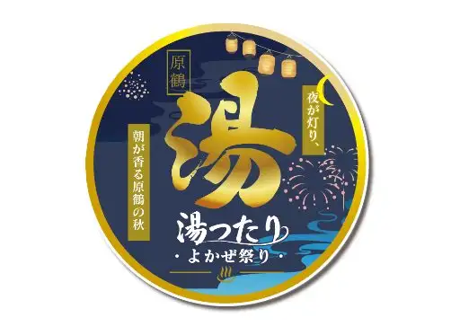
Dining
めんどり屋
Mendori Ya
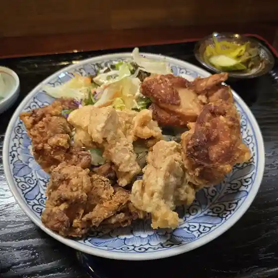
月の峠
Gatsu No Touge
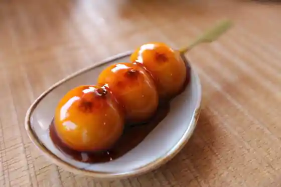
ハトマメ屋
Hatomame Ya
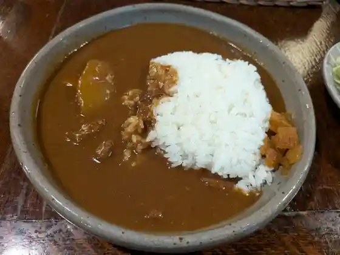
林檎と葡萄の樹
Ringo To Budou No Ki
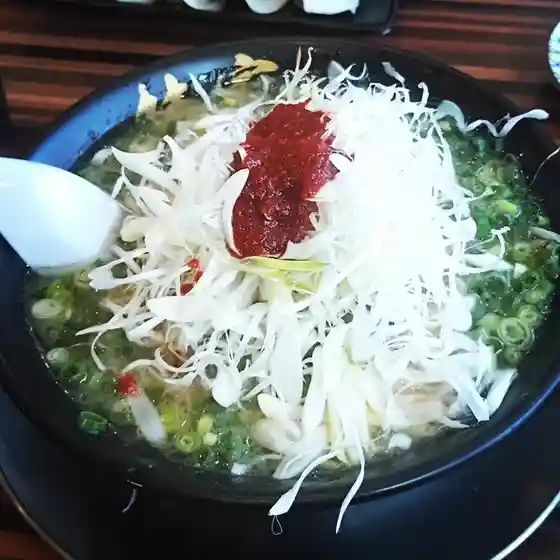
林家 甘木店
Hayashiya Amagi Mise
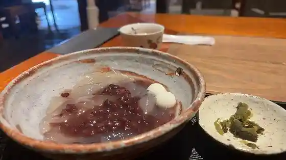
廣久葛本舗
Kou Kyuu Kuzu Honpo
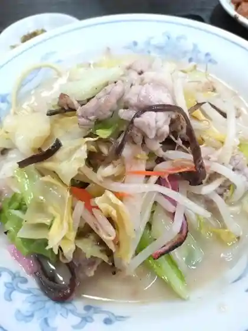
ニュー長田屋
Nyuu Nagata Ya
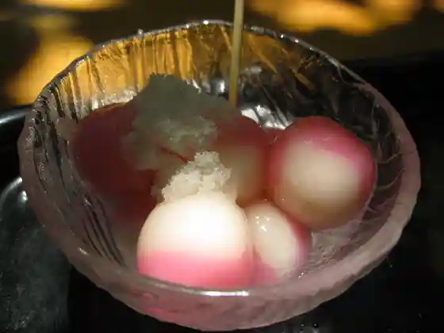
だんごあん
Dangoan
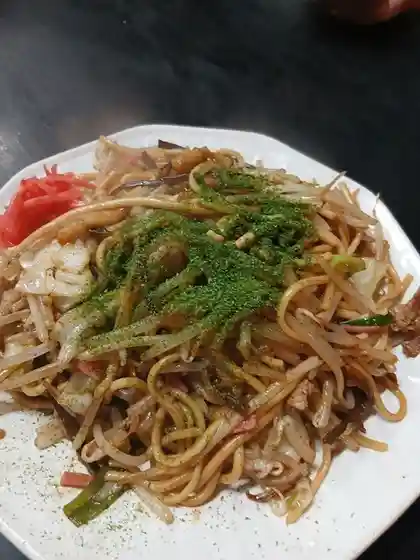
満月食堂
Mangetsu Shokudo
御蕎麦 ちきた
O Soba Chikita
天ぷら七八 朝倉本店
Tenpura Shichihachi Asakura Honten
金屋食堂
Kanaya Shokudo
藤井養蜂場 ビーズファーム
Fujii Youhou Ba Biizufaamu
純手打 うどん屋
Jun Teuchi Udon Ya
キリンビアファーム 福岡
Kirinbiafaamu Fukuoka
あずみうどん 朝倉店
Azumiudon Asakura Mise
白楽天
Hakuraku Ten
赤鶏古処鶏 郷
Akatori Kosho Niwatori Sato
梟の響キ 秋月 いろり蔵
Fukurou No Kyou Ki Akizuki Irori Kura
松月
Matsuzuki
朝倉ほとめき食堂
Asakura Hotomeki Shokudo
りんご庵
Ringo Iori
山田サービスエリア(下り線)レストラン グリーンキッチン
Yamada Saabisueria ( Kudari Sen ) Resutoran Guriinkitchin
マントクラーメン
Mantokuraamen
西公園の今屋のバーガー 甘木店
Nishikouen No Ima Ya No Baagaa Amagi Mise
一六うどん
Ichiroku Udon
大國屋
Taikoku Ya
秋月 とうふ家
Akizuki Toufu Ie
泰泉閣
Taisen Kaku
地鶏焼 かがり火
Jidori Yaki Kagari Hi
ゆうぜん
Yuuzen
朝倉マルシェ 果樹蔵
Asakura Marushie Kaju Kura
六峰館
Roku Mine Kan
福岡センチュリーゴルフ倶楽部 レストラン
Fukuoka Senchuriigorufu Kurabu Resutoran
手切り鉄板焼肉 火縁
Tegire Ri Teppanyaki Niku Hi Heri
ホテルパーレンス小野屋
Hoterupaarensu Ono Ya
パンチェッタ
Panchetta
あさくら 麦家
Asakura Mugi Ie
ORIGINE MONTMARTRE
ORIGINE MONTMARTRE
Aコープ あさくら店
A Koopu Asakura Mise
生そばあずま 甘木店
Naso Baazuma Amagi Mise
だご汁茶屋
Dago Shiru Chaya
チーズ職人とピッツァ なかむら
Chiizu Shokunin To Pittsua Nakamura
道の駅 原鶴
Michi No Eki Hara Tsuru
瓦そば うぐいす
Kawara Soba Uguisu
フル・ベジ・ベーカーズ
フル・ベジ・ベーカーズ
阿さひ飴本舗 菓蔵家
A Sahi Ame Honpo Ka Kura Ie
果実と水車の里
Kajitsu To Suisha No Sato
ラーメンセンター 朝倉店
Raamensentaa Asakura Mise
蕎麦 愛深
Soba Ai Shin
大番
Ooban
黒門茶屋
Kuromon Chaya
元祖白橋 本店
Ganso Shirahashi Honten
三福食堂
Sanpuku Shokudo
豆腐工房 ぬくもり畑
Toufu Koubou Nukumori Hatake
池田屋
Ikeda Ya
炭火処まるやま
Sumibi Tokoro Maruyama
うどん屋 とき
Udon Ya Toki
うどん屋翔
Udon Ya Shou
saboten
saboten
ホテルグランスパアベニュー
Hoteruguransupaabenyuu
聚豊園
Ju Yutaka Sono
原鶴グランドスカイホテル
Hara Tsuru Gurandosukaihoteru
ビューホテル平成
Byuuhoteru Heisei
長崎屋
Nagasakiya
cuwano.
cuwano.
秋月カントリークラブ
Akizuki Kantoriikurabu
波おと
Nami Oto
珈琲 山口
Koohii Yamaguchi
カフェ＆レストラン びっきぃ
Kafe & Resutoran Bikkii
ウォールデン
Uooruden
山田サービスエリア(上り線)
Yamada Saabisueria ( Nobori Sen )
銀のくし
Gin Nokushi
お好み酒蔵 本店
O Konomi Shuzou Honten
お田屋
O Taya
カフェ&レストラン アンディアモ
Kafe & Resutoran Andiamo
HIRO
HIRO
お菓子の四季
O Kashi No Shiki
水の音土の音
Mizu No Oto Tsuchi No Oto
かしの実
Kashino Mi
Blender ice WAKA
Blender ice WAKA
寿司じじや 甘木店
Sushi Jijiya Amagi Mise
うつわ料理 さ乃
Utsuwa Ryouri Sa No
蒼
Ao
原鶴温泉 原鶴の舞
Hara Tsuru Onsen Hara Tsuru No Mai
旨辛屋
Mune Shin Ya
延命館
Enmei Kan
八兵衛
Hachibee
山田サービスエリア(下り線)スナックコーナー
Yamada Saabisueria ( Kudari Sen ) Sunakkukoonaa
ドライブイン香魚
Doraibuin Kougyo
小麦冶 甘木店
Komugi Ya Amagi Mise
うどん み原
Udon Mi Hara
シトラス
Shitorasu
ぴのきお
Pinokio
焼鳥鷹陣
Yakitori Taka Jin
パン工房クルール
Pan Koubou Kuruuru
cafe&gallery SIKI
cafe&gallery SIKI
三連水車の里あさくら
Sanren Suisha No Sato Asakura
一品香 甘木店
Ippin Kaori Amagi Mise
レストラン かだん
Resutoran Kadan
キリンビアパーク福岡
Kirinbiapaaku Fukuoka
安兵衛 甘木店
Yasubee Amagi Mise
秋月温泉 料亭旅館 清流庵
Akizuki Onsen Ryoutei Ryokan Seiryuu Iori
浪花寿し
Naniwa Hisashi Shi
卑弥呼ロマンの湯 売店
Himiko Roman No Yu Baiten
ル パティシエ ムタ
Ru Pateishie Muta
GG
GG
米粉製菓店 コメコウ
Beifun Seika Mise Komekou
タリル珈琲
Tariru Koohii
月月月 秋月店
Tsukizuki Gatsu Akizuki Mise
おそば屋ひびき
Osoba Ya Hibiki
菓子工房 こぐまや
Kashi Koubou Kogumaya
旅館とよとみ
Ryokan Toyotomi
三奈木の卵
Minagi No Tamago
林檎と葡萄の樹
Ringo To Budou No Ki
山田サービスエリア下り線ショッピングコーナー
Yamada Saabisueria Kudari Sen Shoppingukoonaa
さくらよ風に
Sakurayo Kaze Ni
菓秀 桜 本店
Ka Shuu Sakura Honten
鉄板焼 一
Teppanyaki Ichi
にこる亭
Nikoru Tei
オリオン食堂
Orion Shokudo
にんにく屋
Ninniku Ya
膳処 とと屋
Zen Tokoro Toto Ya
味処 日之出屋
Ajidokoro Hinode Ya
焼肉だるま
Yakiniku Daruma
里川海
Satokawa Umi
あさくら亭
Asakura Tei
ざっくばらん
Zakkubaran
かじか
Kajika
midnight ***
midnight
cafe のとり
cafe
Aコープ あまぎ店
A Koopu Amagi Mise
地鶏食堂 三連水車店
Jidori Shokudo Sanren Suisha Mise
クマガエ食品
Kumagae Shokuhin
味処馬見
Ajidokoro Umami
福鶏商店
Fuku Niwatori Shouten
さくら
Sakura
つげ
Tsuge
釜揚うどん
Kama You Udon
三連水車の里あさくら 食工房 カネキチヤ
Sanren Suisha No Sato Asakura Shoku Koubou Kanekichiya
シルクロード
Shirukuroodo
菓秀 桜 秋月店
Ka Shuu Sakura Akizuki Mise
SAJJAN
SAJJAN
肉のたかお 甘木店
Niku Notakao Amagi Mise
ワイン食堂 ル カノン
Wain Shokudo Ru Kanon
SHINDO LAB
SHINDO LAB
居酒屋あかちょうちん
Izakaya Akachouchin
ハンバーグなかよし。
Hanbaagu Nakayoshi .
KITCHEN BAL MOSH PIT
KITCHEN BAL MOSH PIT
妙康
Myou Yasushi
ジョイフル 甘木駅前店
Joifuru Amagi Ekimae Mise
HOTEL AZ 福岡甘木インター店
HOTEL AZ
居酒屋わし家
Izakaya Washi Ie
ファーマーズ・スタンド
ファーマーズ・スタンド
篠崎酒造
Shinozaki Shuzou
華季の樹
Hana Ki No Ki
武膳
Takeshi Zen
俺の人生ふるすいんぐ 朝倉本店
Ore No Jinsei Furusuingu Asakura Honten
焚間珈琲
Fun Kan Koohii
福寿司
Fukuju Tsukasa
秋月
Akizuki
ピザ屋 かのん
Piza Ya Kanon
安兵衛 一木店
Yasubee Hitotsugi Mise
居心地屋こころ
Igokochi Ya Kokoro
Into cafe Le'a Le'a
Into cafe Le&39a Le&39a
焼肉&ダイニング あさくら
Yakiniku & Dainingu Asakura
ROMY
ROMY
蛍雪の里 黒川山荘 十割蕎麦処
Keisetsu No Sato Kurokawa Sansou Juu Wari Sobadokoro
カフェ ブルービー
Kafe Buruubii
喫茶 カンフォーラ
Kissa Kanfoora
cafe クローブ
cafe
PENGUIN VILLAGE
PENGUIN VILLAGE
ｈａｉ－ＫＡＲＡ
hai-KARA
カフェテラス綾
Kafeterasu Aya
キリンビール 福岡工場
Kirinbiiru Fukuoka Koujou
Harapeco kitchen
Harapeco kitchen
MOON MOON MOON CAFE
MOON MOON MOON CAFE
日帰りとお泊りの宿ホテル甘木館
Higaeri Too Tomari No Yado Hotel Amagi Kan
来来亭 甘木インター店
Rairai Tei Amagi Intaa Mise
竹乃屋 甘木駅前店
Take No Ya Amagi Ekimae Mise
ウエスト 甘木店
Uesuto Amagi Mise
想夫恋 甘木店
Soufu Koi Amagi Mise
かまどか 甘木店
Kamadoka Amagi Mise
そば処 利久庵
Soba Tokoro Toshihisa Iori
ギャラリー コバコ
Gyararii Kobako
あきづき市場
Akizuki Shijou
ごはん 日和
Gohan Hiyori
八蔵 甘木店
Hachizou Amagi Mise
農家cafe ののか
cafe
にこにこKitchen
Kitchen
ファームステーションバサロ パン工房
Faamusuteeshonbasaro Pan Koubou
イビサトレス
Ibisatoresu
日本料理 青芳
Nihonryouri Ao Hou
無量庵
Muryou Iori
福鶏
Fuku Niwatori
原鶴グランドスカイホテル 満珠
Hara Tsuru Gurandosukaihoteru Manju
ミニストップ 甘木小田店
Minisutoppu Amagi Oda Mise
居酒屋本陣おやじ
Izakaya Honjin Oyaji
御菓子司亀屋
O Kashi Tsukasa Kameya
はま寿司 朝倉店
Hama Sushi Asakura Mise
麺や天吉
Men Ya Ten Kichi
和菓子処 興膳屋
Wagashi Tokoro Kyou Zen Ya
焼鳥勝政
Yakitori Katsumasa
澗水
Kan Mizu
八嶋屋
Yashima Ya
移動販売車 たこやき 三ちゃん
Idou Hanbai Kuruma Takoyaki Michi Yan
うかい亭
Ukai Tei
TORTE
TORTE
秋月庵
Akizuki Iori
家食屋満吉
Ie Shoku Ya Mankichi
とんかつ 濵かつ 甘木旭町店
Tonkatsu Tsu Amagi Asahimachi Mise
リンガーハット 福岡甘木店
Ringaahatto Fukuoka Amagi Mise
マクドナルド 甘木店
Makudonarudo Amagi Mise
CoCo壱番屋 甘木インター店
Coco Ichiban Ya Amagi Intaa Mise
ぼうぶらうどん
Bouburaudon
松屋/松のや 朝倉甘木店
Matsuya / Matsu Noya Asakura Amagi Mise
おかずの店 こが
Okazuno Mise Koga
レストラン あじこう
Resutoran Ajikou
らあめん処 六道
Raamen Tokoro Rikudou
日本酒バル 天ノ美禄
Nihonshu Baru Ten No Biroku
ホテルパーレンス小野屋 花かご
Hoterupaarensu Ono Ya Hana Kago
ひとつの木
Hitotsuno Ki
太閤
Taikou
居酒屋 かずちゃん
Izakaya Kazuchan
和食そば処 うすの院
Washoku Soba Tokoro Usuno In
ろまんの道
Romanno Michi
あん
An
新月
Shingetsu
扇屋酒店
Ougiya Saketen
三隅製麺工場
Misumi Seimen Koujou
おり～ぶの風
Ori ~ Buno Kaze
鰻舞
Unagi Mai
REady Made
REady Made
荷原珈琲
Ka Hara Koohii
西田製菓
Nishida Seika
みなぎのマルシェ
Minagino Marushie
笑味所 たいよう
Warai Ajidokoro Taiyou
焼鶏 鷹翔
Yaki Niwatori Taka Shou
市民食堂
Shimin Shokudo
KEIKO・Jr
KEIKOJr
水雲亭
Mozuku Tei
森のどんぐり屋
Mori Nodonguri Ya
城カリー
Shiro Karii
布善堂
Nuno Zen Dou
居酒屋 大臣
Izakaya Daijin
美奈宜の舞 お食事処
Mina Gi No Mai O Shokuji Tokoro
新月
Shingetsu
コメダ珈琲店 福岡甘木店
Komeda Koohii Mise Fukuoka Amagi Mise
すき家 朝倉甘木店
Suki Ie Asakura Amagi Mise
ジョイフル 甘木店
Joifuru Amagi Mise
肉の明治屋
Niku No Meijiya
とうふの飛太郎 工場直売店
Toufuno Hi Tarou Koujou Chokubai Mise
ミスタードーナツ イオン甘木ショップ
Misutaadoonatsu Ion Amagi Shoppu
サーティワンアイスクリーム イオン甘木店
Saateiwan'aisukuriimu Ion Amagi Mise
吉野家 甘木店
Yoshinoya Amagi Mise
ケンタッキーフライドチキン イオン甘木店
Kentakkiifuraidochikin Ion Amagi Mise
どんどん亭 甘木店
Dondon Tei Amagi Mise
ガスト 甘木店
Gasuto Amagi Mise
サンエトワール イオン甘木店
San'etowaaru Ion Amagi Mise
あじまん コメリパワー甘木インター店
Ajiman Komeripawaa Amagi Intaa Mise
カフェ&フォト ハコ
Kafe & Foto Hako
八ちゃん堂 甘木店
Yachi Yan Dou Amagi Mise
からあげ大吉 杷木店
Karaage Daikichi Haki Mise
シャトレーゼ 朝倉店
Shatoreeze Asakura Mise
味処あさくら
Ajidokoro Asakura
丸正食堂
Marushou Shokudo
八寸
Hachi Sun
やきとり権兵衛
Yakitori Gonbee
sept
sept
Curry hs
Curry hs
ほっともっと 甘木一ツ木店
Hottomotto Amagi Ichi Tsu Ki Mise
駅弁食堂 水車の詩
Ekiben Shokudo Suisha No Shi
香里園
Kourien
ほっともっと 甘木店
Hottomotto Amagi Mise
とりしん
Torishin
千鳥屋 甘木店
Chidori Ya Amagi Mise
永利牛乳
Nagatoshi Gyuunyuu
青柳菓子舗
Aoyagi Kashi Ho
松末亭
Matsu Matsu Tei
花遊
Hana Yuu
朝倉りんご園
Asakura Ringo Sono
ひろ吉
Hiro Kichi
ながい
Nagai
ゑびす酒造株式会社
Ebisu Shuzou Kabushikigaisha
大吉うどん 朝倉店
Daikichi Udon Asakura Mise
秋月豆腐あぜみち
Akizuki Toufu Azemichi
ひので屋 甘木インター店
Hinode Ya Amagi Intaa Mise
ミニストップ 朝倉インター店
Minisutoppu Asakura Intaa Mise
ベーカリー香房
Beekarii Koubou
お食事処かりゆし
O Shokuji Tokoro Kariyushi
パーレンス小野屋 売店
Paarensu Ono Ya Baiten
焼肉ウエスト 甘木店
Yakiniku Uesuto Amagi Mise
中尾蒲鉾店
Nakao Kamaboko Mise
天然発酵ぱん みんなの木
Tennen Hakkou Pan Minnano Ki
米ノ座 秋月本店
Kome No Za Akizuki Honten
ベーカリー カフェ タセット
Beekarii Kafe Tasetto
吉塚
Yoshizuka
野都里
No Miyako Sato
ピザハット 甘木旭町店
Pizahatto Amagi Asahimachi Mise
Cafe Sol
Cafe Sol
喫茶 門
Kissa Mon
福栄のから揚げ 甘木店
Fukue Nokara Age Amagi Mise
わらびもち 松本茶屋 甘木店
Warabimochi Matsumoto Chaya Amagi Mise
もちラボ
Mochi Rabo
セブンイレブン 杷木インター店
Sebun'irebun Haki Intaa Mise
'Olu'Olu
&39Olu&39Olu
佐世保バーガーC&B 982
C&B 982
comise
comise
原鶴温泉ホテル トップメガ伊藤園
Hara Tsuru Onsen Hotel Toppumega Itou Sono
LAWSON 朝倉杷木店
LAWSON
珈琲館 うえだ
Koohii Kan Ueda
櫻木
Sakuragi
本氣のからあげ 甘木店
Honki Nokaraage Amagi Mise
千鳥屋本家 甘木店
Chidori Ya Honke Amagi Mise
肉のみずた屋
Niku Nomizuta Ya
お好み酒蔵 種
O Konomi Shuzou Tane
老松醤油 松岡本家
Oimatsu Shouyu Matsuoka Honke
晩酌亭 朝倉店
Banshaku Tei Asakura Mise
あさくら珈琲
Asakura Koohii
ラ・メール朝倉
ラ・メール朝倉
やぐるま荘
Yaguruma Sou
牛木農産物直売所 倉康
Ushiki Nousanbutsu Chokubai Tokoro Kura Yasushi
LAWSON 甘木屋永店
LAWSON
FamilyMart 朝倉医師会病院/S店
FamilyMart S
寿泉
Hisashi Izumi
鶴田農園
Tsuruta Nouen
黒川INNレストラン
Kurokawa Inn Resutoran
あさくら珈琲
Asakura Koohii
茶の舞カフェ
Cha No Mai Kafe
ダイレックス ライフガーデン甘木店
Dairekkusu Raifugaaden Amagi Mise
やきとり大将
Yakitori Taishou
ファミリーマート 朝倉一木店
Famiriimaato Asakura Hitotsugi Mise
嘉
Ka
AGSAマルシェ
AGSA
はるき
Haruki
マダベース
Madabeesu
水田精肉店
Suiden Seinikuten
ほしまる
Hoshimaru
ケーキ工房 かしの実
Keeki Koubou Kashino Mi
茶屋 えん
Chaya En
福盛醤油醸造元
Fukumori Shouyu Jouzoumoto
お菓子工房 aonoki
aonoki
青い屋根
Aoi Yane
松末亭
Matsu Matsu Tei
五寶ノ茶ノ間
Go Takara No Cha No Kan
LAWSON 朝倉甘木店
LAWSON
木木の葉 雑器店
Kigi No Ha Zakki Mise
今日和
Kyou Wa
新海寿司
Shinkai Sushi
居酒屋 まるひさ
Izakaya Maruhisa
ウッド ランド
Uddo Rando
花房屋
Hanabusa Ya
山科茶舗
Yamashina Chaho
ヤマザキショップ 朝倉健生病院店
Yamazakishoppu Asakura Takeo Byouin Mise
まるは醤油 直販所
Maruha Shouyu Chokuhan Tokoro
綾
Aya
業務スーパー 甘木店
Gyoumu Suupaa Amagi Mise
焼とり陣屋
Yaki Tori Jinya
PADDY FIELD
PADDY FIELD
ちくご
Chikugo
ファミリーマート 秋月店
Famiriimaato Akizuki Mise
本場韓国料理 MariChan
MariChan
富久瓏
Fuku Rou
喫茶スキマ
Kissa Sukima
やきとり本陣
Yakitori Honjin
小料理めぐみ
Koryouri Megumi
セブンイレブン 甘木持丸北店
Sebun'irebun Amagi Mochimaru Kita Mise
バー&バーガー ウィルズ
Baa & Baagaa Uiruzu
水舟
Mizu Fune
熊ずし
Kuma Zushi
佐藤荘
Satou Sou
遠藤金川堂
Endou Kanagawa Dou
暖家
Dan Ie
八牛
Hachi Ushi
蔵
Kura
カフェ&カーライフサポート リライオン
Kafe & Kaaraifusapooto Riraion
千両
Senryou
しばせん
Shibasen
たからや
Takaraya
CAFE&BAR BRIGHT
CAFE&BAR BRIGHT
あさくら
Asakura
喫茶ジャンクン
Kissa Jankun
遊辺
Yuu Hen
セブンイレブン 杷木町店
Sebun'irebun Haki Machi Mise
喜八郎のたまご直売所
Kihachirou Notamago Chokubai Tokoro
美地菜都
Bi Chi Na Miyako
日田屋食堂
Hita Ya Shokudo
大阪串カツ 徳うさぎ
Oosaka Kushi Katsu Toku Usagi
銘菓 ひよこ イオン甘木店
Meika Hiyoko Ion Amagi Mise
宴処 麦わら食堂
Utage Tokoro Mugiwara Shokudo
喜仙
Kisen
川科
Kawa Ka
昭月堂
Akira Gatsu Dou
中尾食堂
Nakao Shokudo
ひと味華
Hito Aji Hana
京松旅館
Kyou Matsu Ryokan
水車
Suisha
牡蠣小屋あかし
Kaki Koya Akashi
明志栄
Mei Kokorozashi Sakae
空に咲く
Sora Ni Saku
遥
Haruka
バイキングレストラン 志高 福岡甘木店
Baikinguresutoran Shidaka Fukuoka Amagi Mise
OH HAPPY DAY !
OH HAPPY DAY
けやき
Keyaki
よしづか
Yoshizuka
セブンイレブン 朝倉中央
Sebun'irebun Asakura Chuuou
スタンドバー雨
Sutandobaa Ame
Ochiba Chikita
Ochiba Chikita
Koshoan
Koshoan
Kamaage Udon
Kamaage Udon
Misunone Tsuchinone
Misunone Tsuchinone
Olive No Kaze
Olive No Kaze
Oita Expressway Yamada Service Area Inbound Restaurant
Oita Expressway Yamada Service Area Inbound Restaurant
Tempura Nanaya
Tempura Nanaya
Ishokuya Pancetta
Ishokuya Pancetta
Boxwood
Boxwood
Live Fish Kappo Restaurant Oban
Live Fish Kappo Restaurant Oban
Full Vege Bakers
Full Vege Bakers
McDonald s Amagi
McDonald s Amagi
Rely On
Rely On
Chiniwatoriyaki Kagaribi
Chiniwatoriyaki Kagaribi
Namasoba Azuma Amagi
Namasoba Azuma Amagi
Juuwari Handmade Soba Wasada
Juuwari Handmade Soba Wasada
Ishigama artisanal bakery Bigarreau Amagi
Ishigama artisanal bakery Bigarreau Amagi
Hirata Bread
Hirata Bread
Kappa No Su
Kappa No Su
Koganoya
Koganoya
Yuzen
Yuzen
Rikudo Soup Kobo
Rikudo Soup Kobo
Taiwanese Restaurant Ryuka
Taiwanese Restaurant Ryuka
Nukumoribata Bypass
Nukumoribata Bypass
Narayan
Narayan
Torimaru Shokudo
Torimaru Shokudo
Sofuren Amagi
Sofuren Amagi
Gusto Amagi
Gusto Amagi
Grilled Chicken Takajin
Grilled Chicken Takajin
Joyfull
Joyfull
West Amagi
West Amagi
Gallery Cobaco
Gallery Cobaco
Shugetsu
Shugetsu
Washiya
Washiya
Akamaya
Akamaya
Sampuku Shokudo
Sampuku Shokudo
Shugetsu
Shugetsu
Ringer Hut Fukuoka Amaki
Ringer Hut Fukuoka Amaki
Sobaya Issin
Sobaya Issin
Pasta Noosama Amagi
Pasta Noosama Amagi
Shirahashi Horumon Sake No Dojo Branch
Shirahashi Horumon Sake No Dojo Branch
Chataringu
Chataringu
Aka Chochin Amagi
Aka Chochin Amagi
Kiratsune Goryo
Kiratsune Goryo
Daikoku Ya
Daikoku Ya
Masuetei
Masuetei
Sobadokoro Rikyuan
Sobadokoro Rikyuan
Kyushu Sushi Ichiba Amagi
Kyushu Sushi Ichiba Amagi
Joyfull
Joyfull
Kuma Sushi
Kuma Sushi
Bobura Udon
Bobura Udon
Kurogawa Sanso
Kurogawa Sanso
Yatori Takasho
Yatori Takasho
Trout
Trout
Kammidokoro Furusato
Kammidokoro Furusato
Kintaro Ramen
Kintaro Ramen
New Nagataya
New Nagataya
Soba Dokoro Miyano
Soba Dokoro Miyano
Hakata Ichibandori Ishokuya Arai Fc Asakura Amagi
Hakata Ichibandori Ishokuya Arai Fc Asakura Amagi
Umeya
Umeya
Arirang
Arirang
Loire Shoyamachi
Loire Shoyamachi
Loire Amagi
Loire Amagi
Torisho Asakura
Torisho Asakura
Konnichiwa
Konnichiwa
Kakuuchiya Aki
Kakuuchiya Aki
Silk Road
Silk Road
Sake Bar Tennobiroku
Sake Bar Tennobiroku
Ramen Noboruya
Ramen Noboruya
Fukuyoshi
Fukuyoshi
Shokunokura Roan Amagi
Shokunokura Roan Amagi
Cuisine Club Garando
Cuisine Club Garando
Homanya Asakura
Homanya Asakura
Yagyu
Yagyu
Masumi
Masumi
Sagami
Sagami
Hormone and Yakiniku Manpuku
Hormone and Yakiniku Manpuku
Sankaiya
Sankaiya
Soba Saryo Korin
Soba Saryo Korin
Karaoke Room Jagaimo
Karaoke Room Jagaimo
Tachibana
Tachibana
Umesho Mochi Buns Main Store
Umesho Mochi Buns Main Store
Pizza Nakamura
Pizza Nakamura
Shokudoraku Ayabe
Shokudoraku Ayabe
San Marco
San Marco
Buffet Restaurant Shidaka Fukuoka Amagi
Buffet Restaurant Shidaka Fukuoka Amagi
Cafe Restaurant Bicky
Cafe Restaurant Bicky
Hana Mizuki
Hana Mizuki
Chinese Studio Pao
Chinese Studio Pao
Futaba Zushi
Futaba Zushi
Yakitori Fukuso
Yakitori Fukuso
Sushitensen
Sushitensen
Izakaya Kamadoka Amagi
Izakaya Kamadoka Amagi
Kairiki
Kairiki
Nakai
Nakai
Mamedaiko
Mamedaiko
Tomo
Tomo
Shogetsu
Shogetsu
Yakitori Hidechan
Yakitori Hidechan
Kakuchi Yoshi
Kakuchi Yoshi
Egawa Sanso
Egawa Sanso
Irori Yamanokura
Irori Yamanokura
Korien
Korien
Pur Rose Arome
Pur Rose Arome
Ashie
Ashie
Shunayakabo Masuzaki
Shunayakabo Masuzaki
Rin to Saku Hana Asakura
Rin to Saku Hana Asakura
Wa Dan Dan
Wa Dan Dan
Izakaya Sakae
Izakaya Sakae
Izakaya Yagura
Izakaya Yagura
Yakitori Taisho
Yakitori Taisho
But Your Juice Chaya
But Your Juice Chaya
Friend
Friend
Koyuki
Koyuki
Izakaya Yamachan
Izakaya Yamachan
Aoi
Aoi
Kurofune
Kurofune
Mitchan Ramen
Mitchan Ramen
Bar Tomochan Nigawa Korean Homestyle Restaurant
Bar Tomochan Nigawa Korean Homestyle Restaurant
Chikuzen India Tsuki to Kame
Chikuzen India Tsuki to Kame
Yube
Yube
Chinese Restaurant Tosembo
Chinese Restaurant Tosembo
Muso
Muso
Ariran
Ariran
Hassun
Hassun
Field Confectionery
Field Confectionery
Kansui
Kansui
Isrote Paff
Isrote Paff
Show Pub Joy
Show Pub Joy
Pusanko
Pusanko
Oban Hitotsugi Main Store
Oban Hitotsugi Main Store
Mizuki Food Dough
Mizuki Food Dough
Genkai Shokudo
Genkai Shokudo
Hiroyoshi
Hiroyoshi
Hanaungetsu
Hanaungetsu
Aoyoshi Japanese Restaurant
Aoyoshi Japanese Restaurant
Kuboyama Shokudo
Kuboyama Shokudo
Yakitori Izakaya Suiraku
Yakitori Izakaya Suiraku
Suzume Nooyado
Suzume Nooyado
Shirahashi Horumon Sake No Dojo
Shirahashi Horumon Sake No Dojo
Kanemo
Kanemo
Deku No Bo
Deku No Bo
Kizuma
Kizuma
West Restaurant
West Restaurant
Yume Square
Yume Square
Stand Bar Ame
Stand Bar Ame
Mihara Udon
Mihara Udon
Zamboa
Zamboa
Restaurant Aradama
Restaurant Aradama
Anun Iyashi No Restaurant
Anun Iyashi No Restaurant
Kimagure Bar
Kimagure Bar
Chikuba Pizzato Yoshoku No Mise
Chikuba Pizzato Yoshoku No Mise
Kozenya
Kozenya
Fujino Mitsuo
Fujino Mitsuo
Kikitei Amagi Inter Store
Kikitei Amagi Inter Store
Shogetsudo
Shogetsudo
Obento of Hirai Amagi
Obento of Hirai Amagi
Noodle Blue Amagi
Noodle Blue Amagi
Rodin
Rodin
Mister Donut Aeon Amagi Shop
Mister Donut Aeon Amagi Shop
Stay
ホテルグランスパ アベニュー
Hoteruguransupa Abenyuu
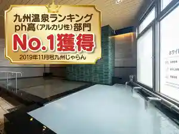
HOTEL AZ 福岡甘木インター店
HOTEL AZ
甘木観光ホテル甘木館
Amagi Kankou Hotel Amagi Kan
旅荘 水雲亭
Ryosou Mozuku Tei
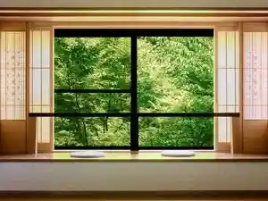
桜たろう紅葉じろうの都
Sakura Tarou Kouyou Jirouno Miyako
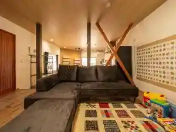
邸宅ギャラリー井村家別邸 月の離なれ
Teitaku Gyararii Imura Iebetsu Tei Gatsu No Ri Nare
秋月温泉 料亭旅館 清流庵
Akizuki Onsen Ryoutei Ryokan Seiryuu Iori
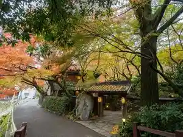
全室絶景 筑後平野一望の宿 ビューホテル平成
Zenshitsu Zekkei Chikugo Heiya Ichibou No Yado Byuuhoteru Heisei
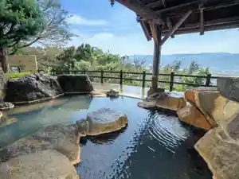
原鶴温泉 泰泉閣（たいせんかく）
Hara Tsuru Onsen Taisen Kaku ( Taisenkaku )
蝶がきらめくお宿 雪月花 せつげっか
Chou Gakiramekuo Yado Yuki Gekka Setsugekka
延命館
Enmei Kan
畳風呂と日本庭園の宿 ホテルパーレンス小野屋
Tatami Furo To Nihonteien No Yado Hoterupaarensu Ono Ya
ほどあいの宿 六峰舘
Hodoaino Yado Roku Mine Kan
旅館とよとみ 【7種の湯めぐりを愉しむ隠れ宿】
Ryokan Toyotomi ( 7 Tane No Yu Meguriwo Tanoshi Mu Kakure Yado )
Sights
Hara Tsuru Yu Ttariyokaze Festival
Haki Dai Himawari Sono
Kirin Flower Garden no Kosumosu (Kirinkosumosufesuta)
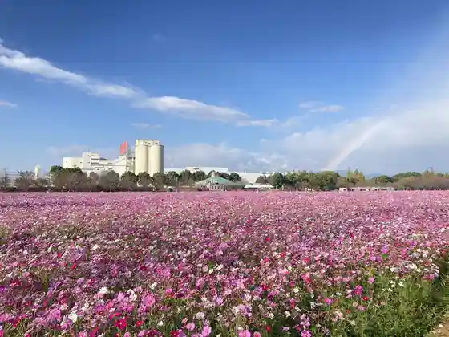
Akizuki Castle Ruins
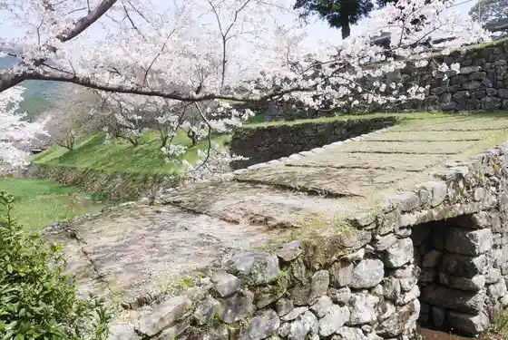
Dangoan
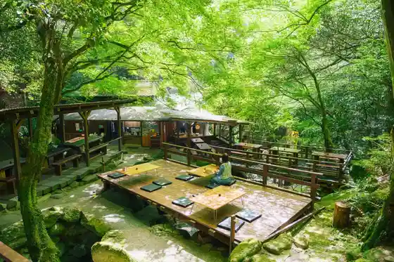
Kirimbiiru Fukuoka Kojo
Sanren Suisha
Taisen Kaku
Hara Tsuru Onsen
Roadside Station Hara Tsuru Farm Suteshombasaro
Asakura Kenko Fukushi Kan Himiko Roman Baths
Akizuki Castle Town
Sanren Suisha no Sato Asakura
Hodoai no Yado Roku Mine Kan
Hara Tsuru Orugoru no Ie
Amagi Park
Asakura no Sanren Suisha no Kado (Yamada Seki Tsusui Shiki)
Kosen (Higaeri Onsen)